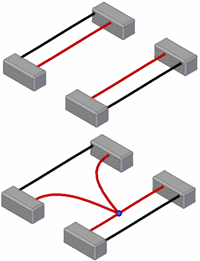
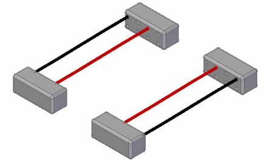
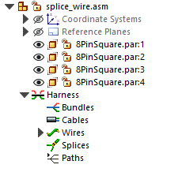
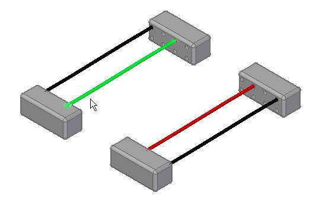
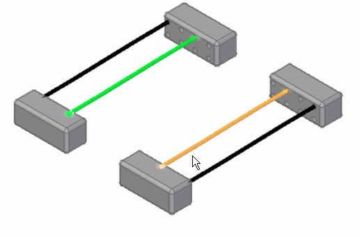
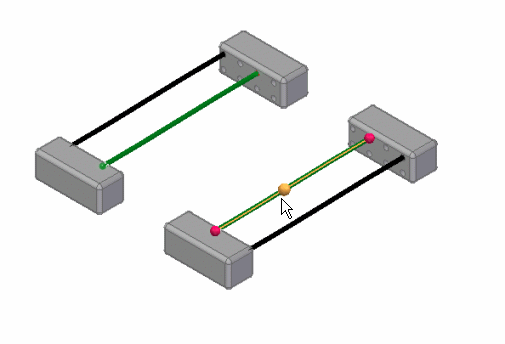
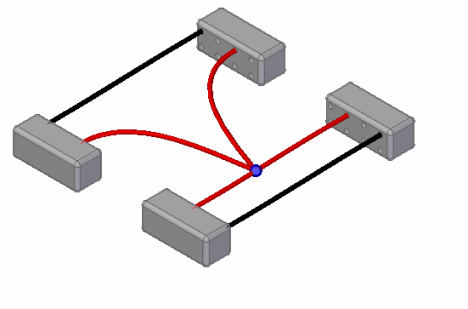
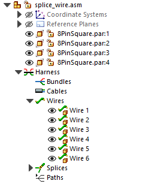
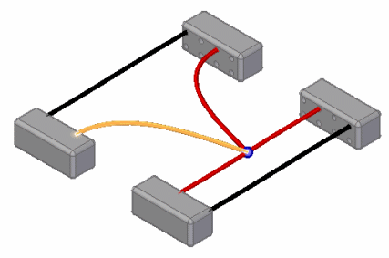
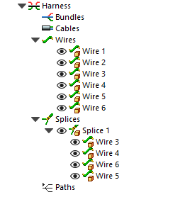

Activity: Adding a splice to a wire
In this activity, you will splice a wire and create additional wires.
Click here to download the activity file.

Open the assembly splice_wire.asm.

Click Tools tab→Environs group→Electrical Routing  command.
command.
The system displays the Electrical Routing environment. The ribbon contains the commands you use to create wire harness conductors (wires, cables, or bundles).
You will use PathFinder for most of this activity.
If the Harness group is collapsed, click the plus symbol (+) to expand it.
Click the plus symbol (+) to expand the Wires group.
The Wires group contains four entries.

Click the Home tab→Electrical Routing group→Splice button
Select the first wire, as shown next.

Select the second wire, as shown next.

Click the green Accept check mark.
Click the splice point as shown in the illustration.

Click Preview.

Click Finish.
Notice that two new wires were added to the Wires group in PathFinder.

In PathFinder, hover over Wire 5 and notice the new wire that was created in the splice.

Click the Expand/Collapse symbol to expand the Splices group and then click the plus symbol (+) to expand the Splice 1 group.
The Splice 1 group contains entries for the wires modified and created when you added the splice.

Click the Tools tab→Close group→Close Electrical Routing button  .
.
On the Quick Access toolbar, click the Save button to save the document  .
.
Close the part.